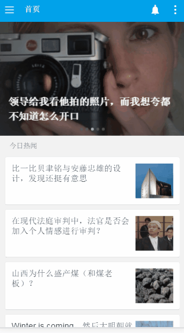
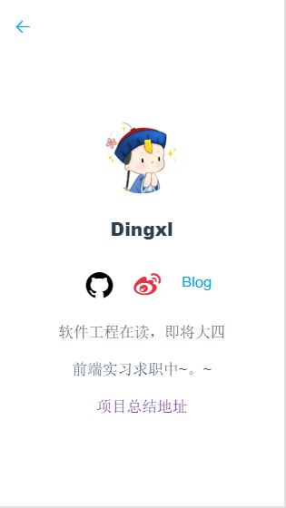

Architecture
很久之前就听基友在吐槽，Vue比React好用太多太多啦之类的（直到现在还深陷在react中不能自拔，哈哈哈），就是他那番话，搞的我心痒痒，所以有了想学Vue的打算，拿着从掘金上扒下来的一篇关于利用Vue+Vue-router构建知乎日报的文章，然后就开始了一个礼拜（除了吃饭睡觉就是在码代码，要哭）的疯狂之旅。
关于如何学习Vue，楼上有一篇Vue60分钟入门，那是我已经做完项目后才看到别人发的一篇挺不错的文章，也是可惜之前没有看到，不过前端的学习在于不断的挖坑，跳坑，和出坑，然后弃坑再找坑的死循环过程，所以我那时也是放着室友的大腿不抱（事实是他也被React缠的不行，不忍打扰），开始自己在Vue官方文档上开始痛苦的自己摸索，不得不赞，这个文档真的非常详细也非常Nice，所以，就这样，一步步开始了这次构建知乎日报之旅。
项目源码戳我哦


introduction
基础Vue的学习就不提了，先来谈谈这个项目中最关键的一个环节Vue-router，它是Vue.js 官方的路由。与 Vue.js 内核深度整合，能让构建单页应用易如反掌，下面贴出这个项目里所用到的路由。
1 2 3 4 5 6 7 8 9 10 11 12 13 14 15 16 17 18 19 20 21 22 23 24 25 26 27 28 29 30 31 32 33 34 35 36
| var router = new VueRouter() router.map({ '/': { component: home, subRoutes: { '/': { component: homeDefault }, '/theme/:id': { name: 'theme', component: homeTheme } } }, '/dingxl/:id': { name: 'dingxl', component: dingxl }, '/detail/:id': { name: 'detail', component: detail }, '/comments': { component: comments }, '/recommender': { component: recommender }, '/section': { component: section } })
|
View
对于View层的话用到了这么几个大组件：
| 组件 |
作用 |
存在路由 |
| home |
包含首页导航栏+侧边栏的组件 |
/ |
| detail |
每篇日报的详细排版包含头部，推荐者及话题的合集组件 |
/detail/:id |
| comments |
每篇日报的评论组件（头，长评+短评） |
/comments |
| recommender |
一些特定日报的推荐者组件 |
/recommender |
| section |
共同话题的合集 |
/section |
| dingxl |
帅哥组件 |
/dingxl/:id |
而小组件componets中：
| 组件 |
作用 |
父组件 |
| home-header |
首页导航栏 |
home |
| sidebar |
侧边栏组件 |
home |
| home-default |
根路径下包含知乎日报列表的大组件 |
存在于根路径 |
| slider |
首页轮播图组件 |
home-default |
| home-theme |
侧边栏中每个主题栏的组件 |
/theme/:id路由下 |
| list-comp |
很多组件都喜欢的一个复用小组件，用于控制每个知乎日报小列表 |
home-default、home-theme、section |
| detail-header |
每篇日报页面的导航栏 |
detail |
| detail-content |
每篇日报的内容 |
detail |
| comments-comp |
日报的评论列表 |
comments |
在这里我们只看其中一个大组件（其他组件其实也是一样的思路）:
home
home.vue中包含两个组件 首页的头组件homeheader以及点击首页按钮后出现的侧边栏组件sidebar包含夜间模式功能
1 2 3 4 5 6 7 8 9 10 11 12 13
| <template> <div class="main-list" id="foo"> <home-header :show-sidebar.sync="showSidebar" :title="title" :tip="tip" :icon-display="iconDisplay"></home-header> <!-- 侧边栏 --> <side-bar :show-sidebar.sync="showSidebar" :tip.sync="tip"></side-bar> <!-- 侧边栏遮罩层 --> <div v-if="showSidebar" class="sidebar-mask" @click="hiddenBar"> </div> <!-- 页面子路由 --> <router-view></router-view> </div> </template>
|
home中的数据
提供是否控制侧边栏显示的showSidebar:false并且设置为sync属性，实现双向绑定（无论在首页中点击侧边栏按钮 或是在侧边栏中点击首页按钮，都能达到切换的目的）
tip:当滑动日报列表时 首页上方的title将隐藏，改为tip显示当前你看的日报是哪个日期，并且这个数据也能双向绑定，主要设置在homeDefault中
1 2 3 4 5 6 7
| data () { return { loading: false, showSidebar: false, tip: '' } }
|
home中的方法
home中主要有两个方法showBar和hiddenBar并且每当使用这个方法时将会改变首页是否允许滚动。
homeheader组件中则是头部的相关布局样式，也有showBar方法
sidebar组件则负责侧边栏的布局，样式方面没有什么说的，主要这里用到了vue的插件vue.resource通过 XMLHttpRequest 或 JSONP 发起请求并处理响应，去向知乎日报爬取数据。
1 2 3 4 5 6 7 8 9 10
| showBar () { window.document.body.classList.add = 'scoll-stop' window.document.querySelector('html').classList.add = 'scoll-stop' this.showSidebar = !this.showSidebar }, hiddenBar () { window.document.body.className = '' window.document.querySelector('html').className = '' this.showSidebar = !this.showSidebar }
|
homeDefault
homeDefault控制轮播图以及首页数据层的展现，其中包含一个轮播图组件slider以及列表中的小组件list-comp（每篇文章当作一个组件方便管理）
1 2 3 4 5 6 7 8 9 10 11 12
| <!--首页的列表--> <template> <slider :top_stories="topStories" v-cloak></slider> <div class="list-box s-{{* date}}" v-for="item in allStories"> <ul> <h2 class="title">{{item.date | dateTime}}</h2> <list-comp v-for="subItem in item.stories" :item="subItem"></list-comp> </ul> </div> </template>
|
homeDefault中的数据
大多是从知乎中获取的列表数据，不过也包含了一些自己的东西，比如loading用来控制当用户把当前页面的日报看完了，继续下滑时，向知乎继续发送请求获取之前的数据，以及titleTip用于发送给home中调用changeTitle改变头部的title，而topStories以及allStories、date等等，则是储存数据和时间等
1 2 3 4 5 6 7 8 9 10
| data () { return { topStories: [], allStories: [], date: '', loading: false, dateArr: [], titleTip: '' } }
|
路由跳转控制scollTop
这也是其中比较重要的一部分，因为当你从首页点进一篇文章中的时候，将跳转进另一个路由结点，当你返回首页时，作为用户，肯定是想回到之前你所看到的那篇日报的位置，这样好继续往下阅览，所以你需要控制路由中的transition来判断路由是否变化，以及调用相应的方法，并且在其中设置了两个监听事件，来触发获取滑动高度和改变头部提示的事件，在deactivate注销路由时会撤销监听。
1 2 3 4 5 6 7 8 9 10 11 12 13 14 15 16 17 18 19 20 21 22
| route: { data (transition) { var _this = this if (transition.from.name === 'detail') { _this.$nextTick(function () { window.document.body.scrollTop = window.sessionStorage.scrollTop }) } else { window.document.body.scrollTop = 0 } window.addEventListener('scroll', _this.getScrollList, false) window.addEventListener('touchmove', _this.whatsTitle, false) transition.next() }, deactivate (transition) { var _this = this window.removeEventListener('scroll', _this.getScrollList, false) window.removeEventListener('touchmove', _this.whatsTitle, false) window.sessionStorage.scrollTop = window.document.body.scrollTop transition.next() } },
|
homeDefault中的方法
两个 ajax 通信方法来获取今日日报的数据以及以往日报，控制头部提示的则是whatsTitle方法，利用当前滚动屏幕的高度，来获取一遍当前显示的是什么日期的日报，再利用 vue 中 $dispatch 向子组件派发事件，而getScrollList方法是用来获取你当前滑动了多少距离，当大于整个屏幕的数值时，将继续往下获取数据
1 2 3 4 5 6 7 8 9 10 11 12 13 14 15 16 17 18 19 20 21 22 23 24 25 26 27 28 29 30 31 32 33 34 35 36 37 38 39 40 41 42 43 44 45 46 47 48 49 50 51 52 53 54 55 56
| methods: { getLatest () { let _this = this _this.loading = true ajax({ url: 'http://news-at.zhihu.com/api/4/news/latest', method: 'GET', callback: function (res) { _this.$set('topStories', res.top_stories) _this.$set('allStories', _this.allStories.concat(res)) _this.$set('date', res.date) _this.dateArr.push(_this.date) _this.loading = false } }) }, getNews () { let _this = this _this.loading = true ajax({ url: 'http://news.at.zhihu.com/api/4/news/before/' + _this.date, method: 'GET', callback: function (res) { _this.$set('allStories', _this.allStories.concat(res)) _this.$set('date', res.date) _this.dateArr.push(_this.date) _this.loading = false } }) }, getScrollList () { var _this = this if ((window.document.body.offsetHeight + window.document.body.scrollTop) + 100 > window.document.body.scrollHeight && !_this.loading) { _this.getNews() } }, replace (str) { return str.replace(/http\w{0,1}:\/\/p/g, 'https://images.weserv.nl/?url=p') }, whatsTitle () { let dateArr = this.dateArr for (let i = 0, len = dateArr.length; i < len; i++) { let top = document.querySelector('.s-' + dateArr[i]).getBoundingClientRect().top if (top < 500 && top > 100) { this.titleTip = dateArr[i - 1] this.$dispatch('changeTile', this.titleTip) } if (top < 100 && top > -400) { this.titleTip = dateArr[i] this.$dispatch('changeTile', this.titleTip) } } } }
|
对于其中的ajax用的是Vue-resource里封装的ajax方法。
Vue中的过滤器
由于项目的首页中每个列表滚动时 上方会显示时间以及每天的日报也会有时间提示星期几，所以用到了过滤器：
1 2 3 4 5 6 7 8 9 10 11 12 13 14 15 16 17 18 19
| const dateTime = (str) => { let year = str.slice(0, 4) let month = str.slice(4, 6) let day = str.slice(6, 8) let now = new Date() let dateArr = [year, month, day] let date = dateArr.join('/') let index = new Date(date).getDay() let week = ['星期日', '星期一', '星期二', '星期三', '星期四', '星期五', '星期六'][index] let nowdate = [now.getFullYear(), '0' + (now.getMonth() + 1), now.getDate()] let nd = nowdate.join('') let dt = dateArr.join('') if (dt === nd) { return '今日热闻' } else { return month + '月' + day + '日 ' + week } }
|
评论列表下面也会有时间戳提示，当然这个时间戳的实现（不是我写得 = = 嘿嘿，学习一下）:
1 2 3 4 5 6 7 8 9 10 11 12 13 14 15 16 17 18 19 20 21 22 23 24 25 26 27
| const formatTime = (timeStamp, fmt) => { if (!timeStamp) { return '' } var _timeStamp = parseInt(timeStamp) if (_timeStamp.toString().length === 10) { _timeStamp *= 1000 } !fmt && (fmt = 'yyyy-MM-dd') var t = new Date(_timeStamp) var o = { 'M+': t.getMonth() + 1, 'd+': t.getDate(), 'h+': t.getHours(), 'm+': t.getMinutes(), 's+': t.getSeconds(), 'q+': Math.floor((t.getMonth() + 3) / 3), 'S': t.getMilliseconds() } if (/(y+)/.test(fmt)) fmt = fmt.replace(RegExp.$1, (t.getFullYear() + '').substr(4 - RegExp.$1.length)) for (var k in o) { if (new RegExp('(' + k + ')').test(fmt)) fmt = fmt.replace(RegExp.$1, (RegExp.$1.length === 1) ? (o[k]) : (('00' + o[k]).substr(('' + o[k]).length))) } return fmt }
|
项目中的跨域
这次项目因为要获取知乎日报提供的接口Api，可局限于同源政策，需要解决其中的跨域问题，学生党没有钱去买服务器，所以在获取知乎日报接口这方面，下了一个Chrome插件 Allow-Control-Allow-Origin来解决其中的跨域问题。
附赠知乎Api接口 知乎Api
finally
呼~~这个Vue的项目总算是完成了，期间遇到了很多坑，主要在于其莫名其妙的报错，大概是因为自己的能力还不够吧，所以遇到问题除了吃不下饭，就只剩睡不着觉了，最后解决的方法也是奇形怪状的，不过对于能做出这个Vue项目来，还是值得肯定的，接下来会将以前学的知识做做整理，并为求职做最后的准备吧，工作之后，若有余力，将会尝试React这个国外大火但国内反响平平的框架，不能再想了，怕自己现在就忍不住去学了 ~(>_<)~，好想学新知识啊啊啊啊啊。。。
最后再唠叨一句，这个项目由于不需要监控组件和数据的状态，所以项目未能用到Vuex，有点遗憾，其实我还是挺期待Vuex+Vue-router+Vue构建出一个单页应用的，希望下一个项目能用上吧，学习之路还很长，加油！